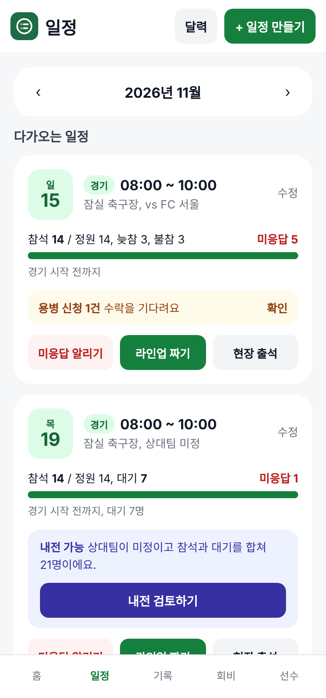
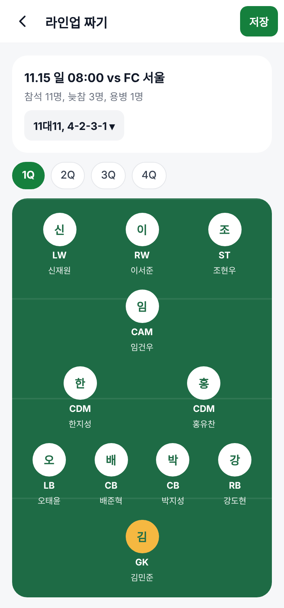
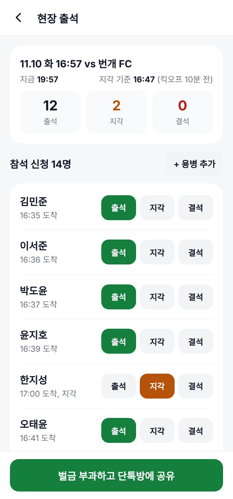
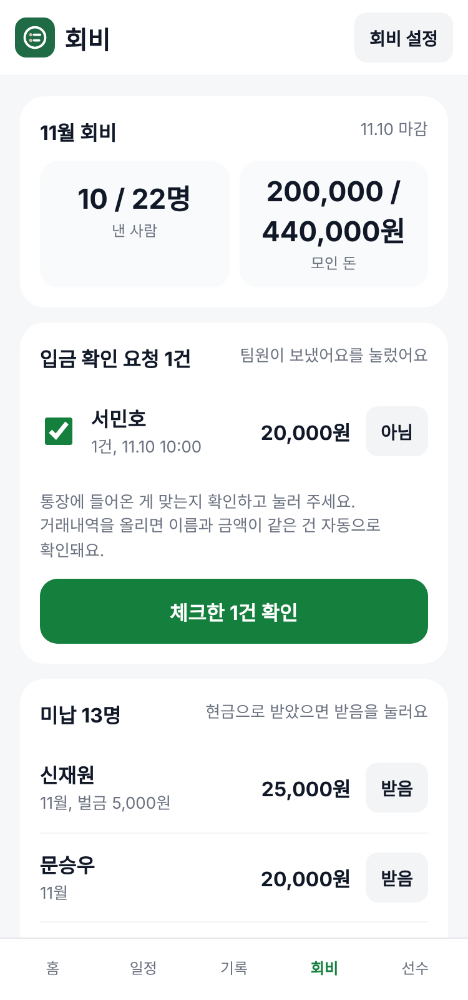
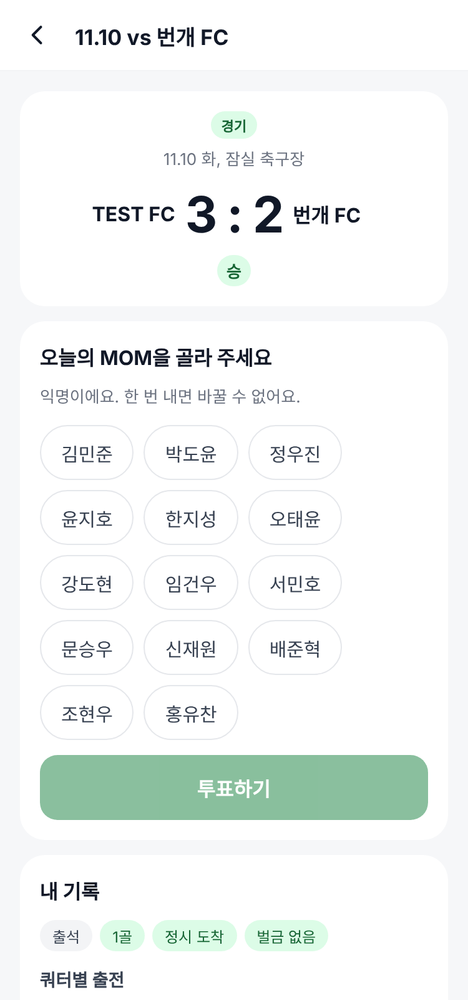

참석 인원 세기, 엑셀 라인업, 출석과 벌금, 회비, 공지와 MOM 투표까지. 우리 팀 링크 하나에서 자동으로 정리돼요.
팀원은 카카오로 한 번 로그인하면 끝. 앱 설치는 필요 없어요.


운영진이 매주 반복하던 다섯 가지 일이에요.
전에는 단톡방에 "이번 주 참석하실 분 투표해주세요" 올리고, 안 한 사람에게 일일이 물어보고, 인원을 다시 세기
이제는 링크 하나로 참석, 늦참, 불참. 인원은 자동으로 모이고, 아직 안 누른 사람만 따로 보여서 한 번에 알려요.
전에는 엑셀에 포지션과 쿼터를 적고, 누가 몇 번 쉬는지 손으로 맞추기
이제는 포메이션 위에 인원을 올려 자리를 정하면, 포지션에 맞춰 인원별 휴식 수를 자동으로 고르게 맞춰요.
전에는 출석을 부르고 지각한 사람을 메모했다가, 나중에 벌금을 계산해서 공지하기
이제는 현장에서 없는 사람만 누르면 지각, 결석이 기록되고 팀 규칙대로 벌금이 바로 붙어요.
전에는 통장 내역을 보면서 누가 냈는지 한 명씩 체크하기
이제는 팀원이 "입금했어요"를 누르면 운영진은 확인만. 달마다 낸 사람과 미납자가 한눈에 보여요.
전에는 중요한 공지는 대화에 묻히고, 투표는 따로 만들어서 링크 돌리기
이제는 공지는 맨 위에 고정, 회식 날짜 설문과 오늘의 MOM 투표도 앱 안에서 바로 열려요.
실제로 매주 쓰는 화면이에요.



축구 11인 4쿼터, 풋살 8쿼터, 내전까지 모두 돼요.